Support Resources
- Online Help File: http://themolitor.com/help/vysual_html
- FAQ and troubleshooting: click here
- Support Forums: http://www.themolitor.com/forums/
- Customization Requests: http://themolitor.com/custom
- Theme Demo: http://themes.themolitor.com/vysual_html_landing
Installation
- Download the final zip file from your downloads page.
- Unzip the final zip file; you should now have a final download folder.
- Do NOT upload the final download folder. Open up the final download folder.
- Browse the contents and find the actual template folder. If you look inside the template folder, you will see a “style.css” file. This is how you know you have found the template folder.
- Upload ONLY the template folder to your designated directory.
Logo Setup
There are two logos needed for the different types of screens currently out there. The hi-res version should be two times (2x) the size of the standard logo with "@2x" appended to the name.
logo.png - 217×61
logo@2x.png - 436×121
Template Files
- aside_category.html - displays a horizontal list of items intended for "cast & crew" styled pages from the demo site.
- gallery.html - displays a gallery of full screen images with title and description text.
- index.html - displays a center play button with reviews.
- page.html - displays a standard page with centered content.
- post_category.html - displays a horizontal list of items intended for "news" styled pages from the demo site.
- post.html - displays a standard post with links to next/previous post pages (if applicable).
- ratings.html - displays available rating options. This template is not used in any templates. It's intended to be a copy/paste source.
- videos_list.html - displays a horizontal list of items intended for "videos 2" styled pages from the demo site.
- videos_page_1.html - displays a full screen image with a centered play button. Additional details available in the lower-right corner.
Main Menu
The main menu displays in the sidebar for each page. The markup is as follows...
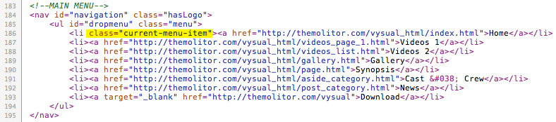The "current-menu-item" class highlights the current page.
Home Page
When using the "index.html" template, the page will display a centered play button and reviews that cycle in the lower right-hand corner.
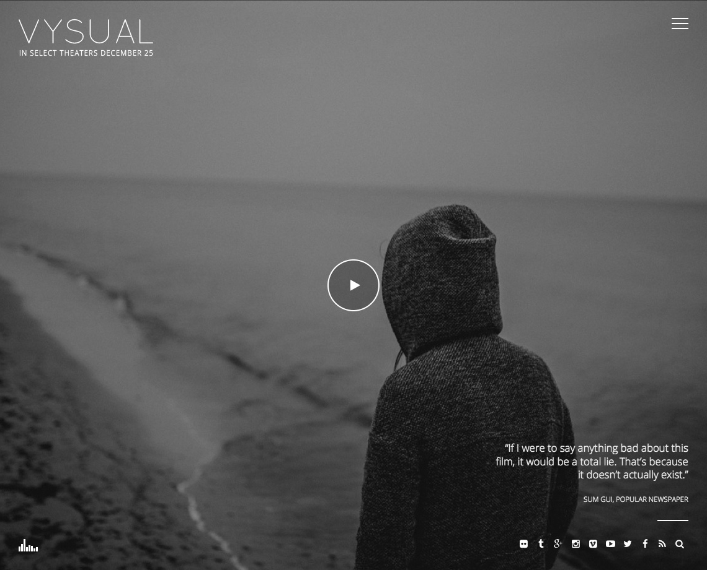The markup is managed as follows...
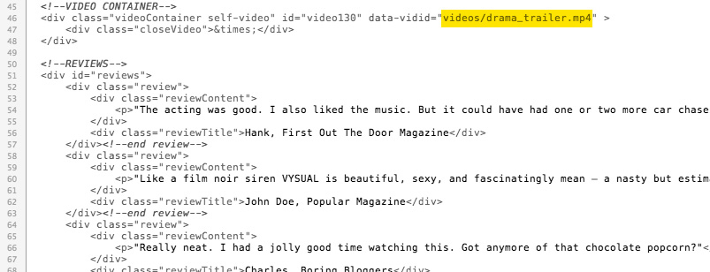To auto-play the video on the home page, remove the comments at the bottom of custom.js as show below...
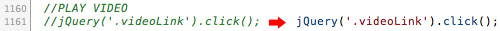Gallery Page
When using the "gallery.html" template, the theme will automatically grab any images you have listed and display them full screen.
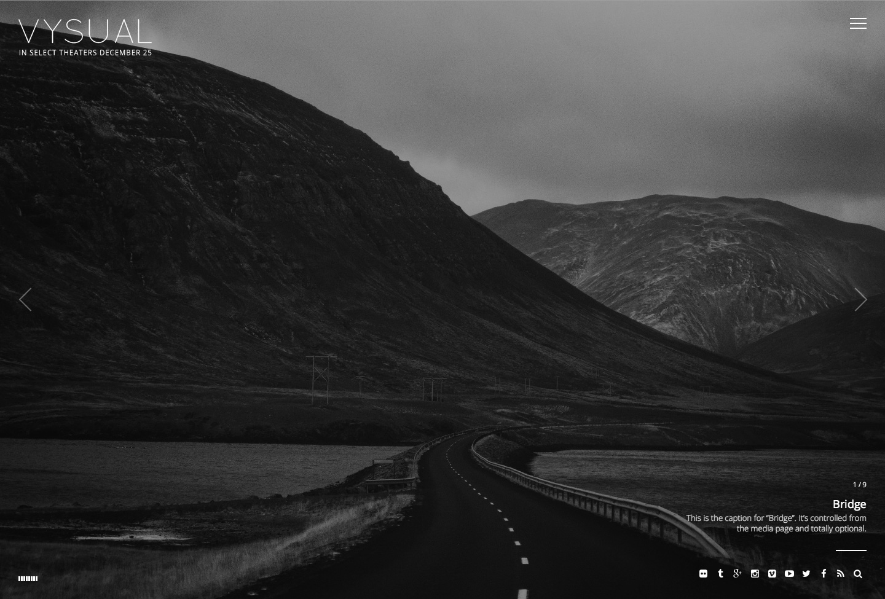The markup is managed as follows...
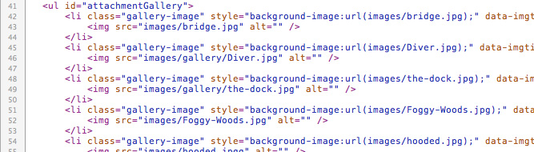Video Page
When using the "videos_page_1.html" template, the page displays a single video post with play button and title/content in the lower-right corner. There are arrow links to additional video posts.
The markup is managed as follows...
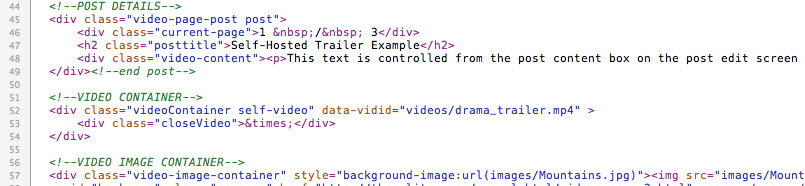Audio
The audio is controlled in the lower left-hand corner of each page. The markup is as follows...
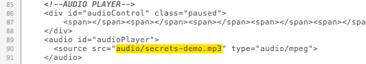The auto-playing feature is controlled from the bottom of custom.js. The markup is as follows...
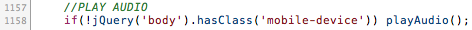Remove or comment out the above line to disable the auto-play feature.
Images
- Full screen background - no spcecific size required, but 16:9 aspect ratio is suggested.
- Post listings - images should be 700x450.
- Post grid gallery - images should be 150x150
- Logo - no specific size required, but an additional logo image is needed for hi-res displays. More info
Background Video
The background video feature is controlled from scripts/custom.js. The video background system currently requires an MP4 video. The markup is as follows...
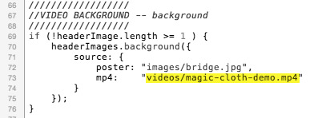The "poster" setting is used to display an image for when background video is not supported. More info »
Social Links
Social links appear in the lower right-hand corner of each page. That markup is as follows...
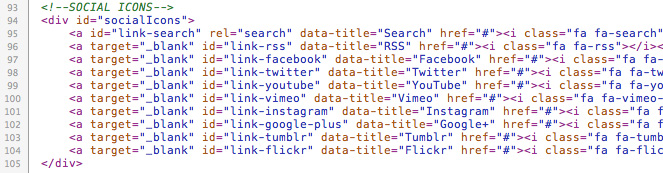Footer Credits
The credits text is located at the bottom of each page template. To create the "poster credits" style, simply use [SQUARE BRACKETS] to group text together and (round brackets) to make text small.
For example...
[STUDIO NAME PICTURES (presents)] [(an) PRODUCERS (production)] [(a) JOHN DOE (picture)]
...displays like this...
Retina Ready
This theme comes retina ready. Simply upload another image at twice the size and add "@2x" to the end of the name. For example, if you want to use "myimage.jpg" at 100x200, upload "myimage@2x.jpg" at 200x400.
JavaScript
This theme imports the following JavaScript files:
- jQuery: jQuery is a JavaScript library that greatly reduces the amount of code that you must write.
- custom.js: The custom.js file provides some custom scripts for jQuery.
- background.js, core.js, transition.js: These scripts are used to display a video background.
- retina.js: Detects retina displays and serves high resolution images. More info »
- spin.js: This creates a loading animation that is not image based.
FAQ and Troubleshooting
Why does the background video not play on mobile?
Mobile devices don't allow video to auto play as they require user activation (i.e. the user has to click "play" for anything to happen). As a result, the background video would not play when the page loads. Additionally, since there is no "play" button, there's no way for the user to activate the background video. This is the reason the image is displayed instead of a non-playing, inaccessible video background for mobile devices.
Why does audio not work on mobile devices?
Mobile devices don't provide consistent audio control. The audio is a device/system feature, not a browser/site feature, so it doesn't provide the same experience or control that a desktop browser does.
For example, on an iPad the audio would not stop if you navigate to a different site or leave the web browser app all together. For this reason, the audio feature is deactivated on mobile devices.
Can I auto-rotate through the videos template?
With the way VYSUAL is setup, the videos page template uses AJAX to load the next post/video when you click the arrows on the page. Since AJAX is being used, the amount of time it takes for the next post to appear varies depending on internet connection speed and the size of the page being loaded.
For example, I click the arrow and the next post appears in 2 seconds. I click it again and the next post appears in 3 seconds. On a different machine/location, I click the arrow and the post appears in 5 seconds - maybe you see where I'm going with this...
Since AJAX is used, there is no way to KNOW how long the post will take to load. If an auto-rotation feature was applied, this could cause issues to occur -- such as the page appearing and then a second later the next page appears.
CONCLUSION: Auto-rotation is NOT an option/recommended because VYSUAL uses AJAX.
Customizer settings not working (autoplay, slideshow, etc.)
If you're experiencing an issue with the Customizer settings not working (i.e. audio won't auto play, slideshow doesn't work, etc.), the issue might be related to the lack of Widgets.
There appears to be a WordPress bug that requires a widget to be active in order for the Customizer settings that appears AFTER the widget section to load. If you're not using any widgets, this may be the issue.
SOLUTION: Activate a text widget and leave the title/content blank. This will allow WordPress to continue loading the rest of the Customizer settings without an actual widget being displayed in the sidebar area.
Scroll Bars Look Different
Each OS (and browser) treats scroll bars differently. For example, Mac OS has a system setting that allows you to control if scroll bars are hidden or visible on the page. In addition to OS system settings, each browser displays scroll bars a little bit different. Some have transparent bars that fade away when you're done scrolling and others have old-school blue and bulky scroll bars at all times (sexy, right?...not so much).
Please keep in mind: scroll bars are a system-controlled element, not a theme-controlled element. Currently only one browser (Chrome) allows CSS to control some elements of the scroll bar design, but this option is currently very limited. There is some popular approaches that hide the scroll bars and utilize JavaScript to add 100% custom scroll bars, but this approach is VERY buggy and causes issues on most mobile devices.
If you think your site has issues, please provide the details of both the OS and web browser that you're using and I'll be sure to check it out for issues. As always, please be sure to compare the performance of your site against the demo site for reference: http://themes.themolitor.com/vysual
Changelog
v 1.0.0 - March 2015 * Initial Release